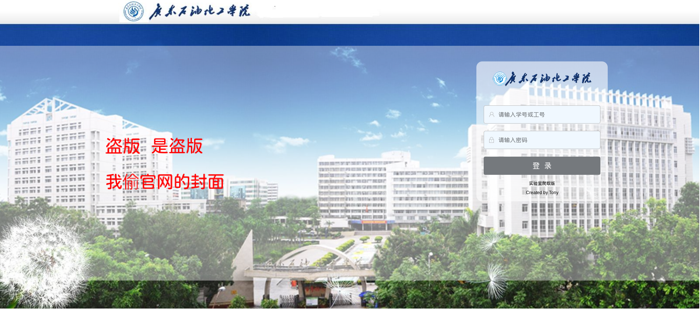
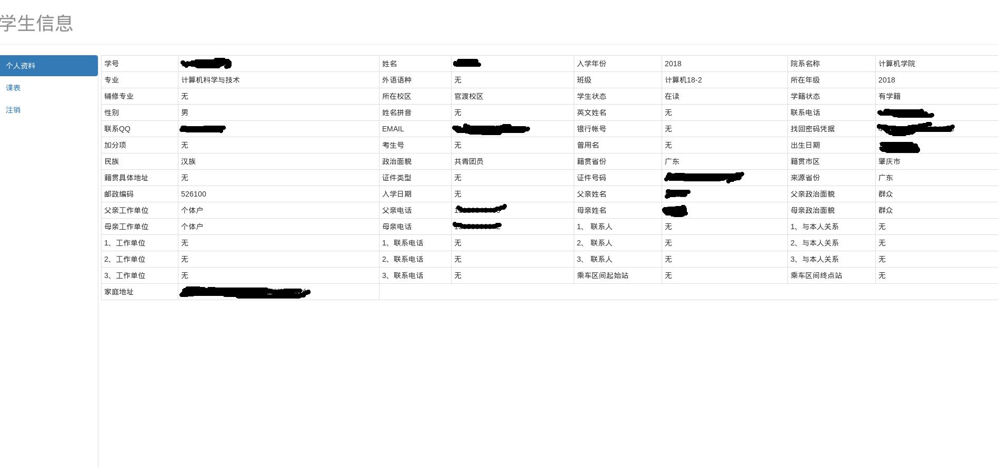

<!DOCTYPE HTML>
<html>
<head><meta name="generator" content="Hexo 3.8.0">
  <meta charset="utf-8">
  <meta http-equiv="pragma" content="no-cache">
  <meta http-equiv="cache-control" content="no-cache">
  <meta http-equiv="expires" content="0">
  
  <title>实验室任务 | Tony Blog</title>
  <meta name="author" content="Tony">
  
  <meta name="description" content="code">
  
  
  <meta name="viewport" content="width=device-width, initial-scale=1, maximum-scale=1">

  <meta property="og:title" content="实验室任务">
  <meta property="og:site_name" content="Tony Blog">

  
    <meta property="og:image" content="">
  

  
  
    <link href="/favicon.png" rel="icon">
  
  
  <link rel="stylesheet" href="/css/bootstrap.min.css" media="screen" type="text/css">
  <link rel="stylesheet" href="/css/font-awesome.css" media="screen" type="text/css">
  <link rel="stylesheet" href="/css/style.css" media="screen" type="text/css">
  <link rel="stylesheet" href="/css/responsive.css" media="screen" type="text/css">
  <link rel="stylesheet" href="/css/highlight.css" media="screen" type="text/css">
  <link rel="stylesheet" href="/css/google-fonts.css" media="screen" type="text/css">
  <!--[if lt IE 9]><script src="//html5shiv.googlecode.com/svn/trunk/html5.js"></script><![endif]-->

  <script src="/js/jquery-2.0.3.min.js"></script>

  <!-- analytics -->
  
<script>
  (function(i,s,o,g,r,a,m){i['GoogleAnalyticsObject']=r;i[r]=i[r]||function(){
  (i[r].q=i[r].q||[]).push(arguments)},i[r].l=1*new Date();a=s.createElement(o),
  m=s.getElementsByTagName(o)[0];a.async=1;a.src=g;m.parentNode.insertBefore(a,m)
  })(window,document,'script','//www.google-analytics.com/analytics.js','ga');
  ga('create', 'UA-70812759-1', 'auto');
  ga('send', 'pageview');
</script>


<script>
var _hmt = _hmt || [];
(function() {
  var hm = document.createElement("script");
  hm.src = "//hm.baidu.com/hm.js?cb5448498d7169c668b07c2b255d62c1";
  var s = document.getElementsByTagName("script")[0]; 
  s.parentNode.insertBefore(hm, s);
})();
</script>


</head>
</html>
 <body>  
  <nav id="main-nav" class="navbar navbar-inverse navbar-fixed-top" role="navigation">
    <div class="container">
      <button type="button" class="navbar-header navbar-toggle" data-toggle="collapse" data-target=".navbar-collapse">
		<span class="sr-only">Toggle navigation</span>
        <span class="icon-bar"></span>
        <span class="icon-bar"></span>
        <span class="icon-bar"></span>
      </button>
	  <a class="navbar-brand" href="/">Tony Blog</a>
      <div class="collapse navbar-collapse nav-menu">
		<ul class="nav navbar-nav">
		  
		  <li>
			<a href="/archives" title="All the articles.">
			  <i class=""></i>Archives
			</a>
		  </li>
		  
		  <li>
			<a href="/categories" title="All the categories.">
			  <i class=""></i>Categories
			</a>
		  </li>
		  
		  <li>
			<a href="/tags" title="All the tags.">
			  <i class=""></i>Tags
			</a>
		  </li>
		  
		  <li>
			<a href="/about" title="About me.">
			  <i class=""></i>About
			</a>
		  </li>
		  
		</ul>
      </div>
    </div> <!-- container -->
</nav>
<div class="clearfix"></div>

  <div class="container">
  	<div class="content">
    	 


	
		<div class="page-header">
			<h1> 实验室任务</h1>
		</div>
	


<div class="row post">
	<!-- cols -->
	
	<div id="top_meta"></div>
	<div class="col-md-9">
	

	<!-- content -->
	<div class="mypage">		
	  		

	  <p>任务要求: 抓取学校教务系统的个人信息和课表，做成网站访问。<br>工具: <strong>python</strong>（request，beautifulsoap，django），<strong>css</strong>，<strong>js</strong>，<strong>jquery</strong>，<strong>html</strong>，<strong>bootstrap</strong>(做UI）<br>具体过程: 用python的request库获取学生信息，再beautifulsoap解析，提取出学生信息，做成一个<strong>StudentInfo</strong>类。接下来用django搭建动态网站，用StudentInfo类代替数据库，在网页中用ajax获取数据，js加载布局。</p>
<p>效果如下：<br><br></p>
<hr>
<p>唉，说一下做的过程中遇到的坑。</p>
<ul>
<li><h2 id="登录不上"><a href="#登录不上" class="headerlink" title="登录不上"></a>登录不上</h2><p>刚开始我把数据直接提交到登录url，登录不上，以为教务系统有识别爬虫的功能，于是把浏览器的请求头都添加上，但还是不行。看浏览器抓包，登录首页时，教务系统给了一个cookie，后来登录就要提交这个cookie。所以只要登录的时候，用request的session的请求一下首页，拿一下cookie就搞定了。</p>
</li>
<li><h2 id="解析信息"><a href="#解析信息" class="headerlink" title="解析信息"></a>解析信息</h2><p>python做信息字典的时候，忘了键值相同，会覆盖其值。。这个问题纳闷了几天。</p>
</li>
<li><h2 id="偷官网首页"><a href="#偷官网首页" class="headerlink" title="偷官网首页"></a>偷官网首页</h2><p>唉，偷首页还是不要偷上js，弄出一个ui，搞css和图片就好了。</p>
</li>
<li><h2 id="用mysql还是缓存？"><a href="#用mysql还是缓存？" class="headerlink" title="用mysql还是缓存？"></a>用mysql还是缓存？</h2><p>刚开始用mysql保存学生信息，最后决定用缓存保存学生信息。用mysql做代理网站太麻烦了，网站更新速度快，而且信息多，加上这些信息并不用保存太久。而一个StudentInfo类就保存全部，岂不美滋滋。</p>
</li>
</ul>
<hr>
<p>大学的第一个项目，用时大概一个月，由python学起，学到django的使用，后来发现即学即用效率是最高的，beatifulsoap，request，css，html，js，jquery都没有经过系统的学习，即学即用。<br>写这篇博客纪念一下，写完了，可以回去补高数了。</p>
<p>项目:<a href="https://github.com/TonyGuy/CrawlProject/" target="_blank" rel="noopener">盗版教务系统</a></p>
	  
	</div>

	<div>
  	<center>
	<div class="pagination">

    
    
    <a href="/2019/03/29/differ-temp/" type="button" class="btn btn-default"><i class="fa fa-arrow-circle-o-left"></i> Prev</a>
    

    <a href="/" type="button" class="btn btn-default"><i class="fa fa-home"></i>Home</a>
    
    <a href="/2018/11/14/FirstHW/" type="button" class="btn btn-default ">Next<i class="fa fa-arrow-circle-o-right"></i></a>
    

    
</div>

    </center>
	</div>
	
	<!-- comment -->
	
<section id="comment">
    <h2 class="title">Comments</h2>

    
</section>


	</div> <!-- col-md-9/col-md-12 -->
		
	
	<div id="side_meta">
		<div class="col-md-3" id="post_meta"> 

	<!-- date -->
	
	<div class="meta-widget">
	<i class="fa fa-clock-o"></i>
	2018-12-09 
	</div>
	

	<!-- categories -->
    

	<!-- tags -->
	
	<div class="meta-widget">
	<a data-toggle="collapse" data-target="#tags"><i class="fa fa-tags"></i></a>		  
    <ul id="tags" class="tag_box list-unstyled collapse in">	  
	    
  <li><a href="/tags/HomeWork/">HomeWork<span>2</span></a></li>

    </ul>
	</div>
		

	<!-- toc -->
	<div class="meta-widget">
	
	</div>
	
    <hr>
	
</div><!-- col-md-3 -->

	</div>
		

</div><!-- row -->


	</div>
  </div>
  <div class="container-narrow">
  <footer> <p>
  &copy; 2019 Tony
  
      with help from <a href="http://hexo.io/" target="_blank">Hexo</a>,<a href="http://github.com/wzpan/hexo-theme-freemind/">Freemind</a>,<a href="http://getbootstrap.com/" target="_blank">Twitter Bootstrap</a> and <a href="http://getbootstrap.com/" target="_blank">BOOTSTRA.386</a>. 
     <br> Theme by <a href="http://github.com/wzpan/hexo-theme-freemind/">Freemind.386</a>.    
</p>
 </footer>
</div> <!-- container-narrow -->
  


  
<a id="gotop" href="#">   
  <span>⬆︎TOP</span>
</a>

<script src="/js/jquery.imagesloaded.min.js"></script>
<script src="/js/gallery.js"></script>
<script src="/js/bootstrap.min.js"></script>
<script src="/js/main.js"></script>
<script src="/js/search.js"></script> 


<link rel="stylesheet" href="/fancybox/jquery.fancybox.css" media="screen" type="text/css">
<script src="/fancybox/jquery.fancybox.pack.js"></script>
<script type="text/javascript">
(function($){
  $('.fancybox').fancybox();
})(jQuery);
</script>


   <script type="text/javascript">      
     var search_path = "search.xml";
	 if (search_path.length == 0) {
	 	search_path = "search.xml";
	 }
	 var path = "/" + search_path;
     searchFunc(path, 'local-search-input', 'local-search-result');
   </script>


</body>
   </html>
